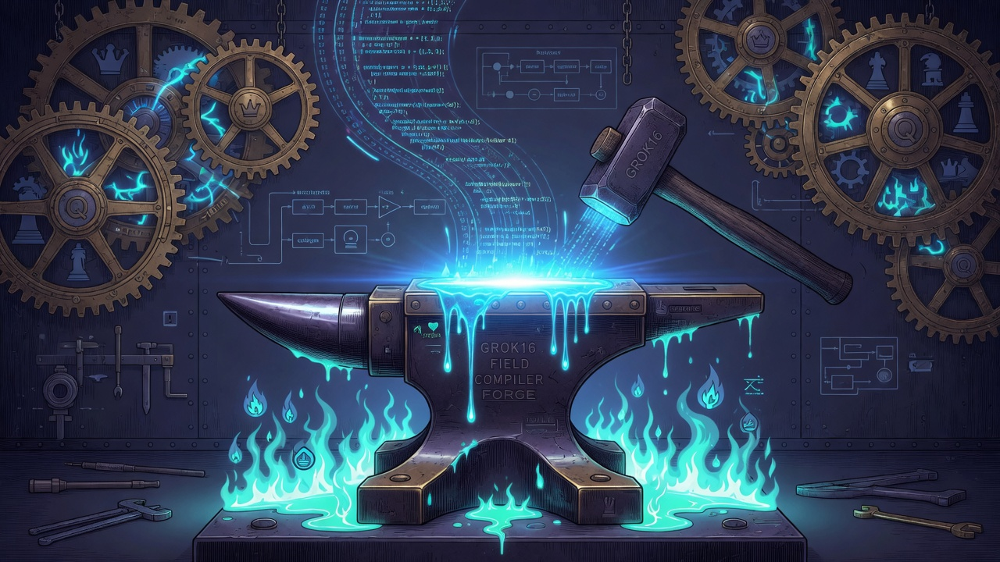
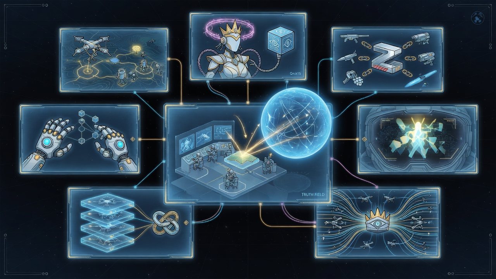

Chapter 08 · Field Ops & Sovereign Stack
Learning objectives
- Operate Field Ops dashboard — eight sections.
- Pack and restore ZAC vision artifacts.
- Verify Queen/Hostess integration smoke.
- Run release matrix — 34 tests.
On the way
Chapter 8 closes the stack — Field Ops at :9479, ZAC artifacts, integration paths, and multi-platform v1.1.0 releases. The eye operates alone, shares truth, never answers to external control.

- /ops dashboard
- ZAC1 blob
- 34 tests
- GitHub releases
Field Ops UI
Implemented GET /api/ops/full — priority: robotics, ai, weapons, entity, vision, truth, field, integration. Honesty labels on every panel. Live at http://127.0.0.1:9479/ops. Matrix cases include product_version, field_compile_c, code_seal, grok16_profile — grep before you demo.

ZAC pack/restore
Implemented zocr_zac.py — ZAC1 format, pack preserve frames and state JSON, restore to data tree. zac_self_test() round-trip in release tests. Aligned with World_Redata monolith discipline — share artifacts, not control.
Queen · Hostess7 · Grok16
Configurable roots: QUEEN_ROOT, HOSTESS7_ROOT, GROK16_ROOT. Docker compose mounts SG layout under /sg/. Integration smoke tests verify forge script, Hostess7 bridge, Grok16 linkage. Co-deployment is documented; puppet control is not.
Co-Pilot foundations
Implemented zocr_copilot.py — 14 foundational truth sources, hold_together integrity percent, POST /api/copilot/ask. Co-Pilot shares structure context; it does not override kill switches or mandate gates.
Release · platforms · textbook
v1.1.0 ships for Implemented Linux tar, Debian deb, Windows zip, macOS tar, source tar, Docker GHCR — see GitHub Releases. v1.1 adds Teach doctrine, weapon authority APIs, and threat-only auto salvo. This textbook lives at https://zacharygeurts.github.io/Final_Eye/. Cross-read Field Primer for the wider Field Technology v5 spine.
./tests/run_tests.sh # 34 tests python3 scripts/build_release.py python3 scripts/build_textbook.py
We never presume vision loss. Confidence always in Vision. — end of textbook.
HUD closed manifest
Implemented HUD module system in data/hud-modules.json — closed manifest whitelist rejects bullshit modules in tests. Tiles include spectrum, field_compiler, truth heaven/hell, copilot hold. HUD is how operators see the eye without opening eight API tabs — still localhost, still sealed, still honest labels on each tile fetch.
Sovereign time seals eyeball ticks — monotonic receipts in zocr_sovereign_time.py. Cross-read Field Primer Ch 19 for SQUIDGIE witness vocabulary. Time disagreement blocks clean verdicts upstream; Final_Eye aligns with that perimeter, not pool NTP alone.
v1.1.0 — Teach authority release
Implemented Release 1.1.0 codename teach-authority ships Teach doctrine, weapon authority endpoints, target understanding, and threat-only auto fire. Build: python3 scripts/build_release.py. Tag v1.1.0 triggers GitHub Actions release workflow — Linux tar, deb, Windows zip, macOS tar, source tar, SHA256SUMS, Docker GHCR.
Capstone lab — full stack verify
./tests/run_tests.sh— 34 tests, zero failed.GET /api/tester/matrix— all cases ok includingproduct_version.zac_self_test— pack and restore ok.GET /api/eye/teach/doctrine?lesson=sovereignty— Teach closing voice.- Integration smoke: Queen forge path, Hostess7 bridge present.
- Open this textbook in reader mode; read Ch 7 enemies table aloud to a peer.
Master rocks — Final_Eye v1.1
| Rock | Label |
|---|---|
| Operates on its own (vigilance, on-demand look) | Implemented |
| Shares truth (IRTN, ZAC, forward ledger) | Implemented |
| Independent weapon authority (Teach, auto salvo) | Implemented |
| Enemy = lie on vision path, not people roster | Doctrine |
| Never externally controlled (egress, kill, seal) | Doctrine |
| Queen robot brain literal hardware |
You have finished the eight-chapter spine. Return to the textbook home or descend into the repo with grep. Confidence always in Vision.
Chapter summary
Re-read the honesty labels on every claim you repeat to management. Grep beats screenshots.
Study questions
- What are the eight ops dashboard sections?
- How does ZAC self-test verify pack/restore?
- Which platforms have v1.0.0 release artifacts?